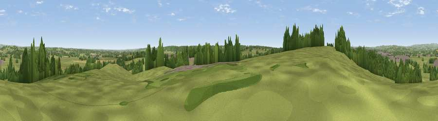

Viewpoint near Uttoxeter
#30018 in England · top 45% of its area beats it · near UttoxeterWhere it is
The exact computed spot (SK 10775 31875). Click the marker for map links.
The view, rendered

A 360° render of this exact spot computed from the terrain model, tree cover and land cover — summer colours, afternoon light, calibrated against photographs of famous viewpoints. Real trees, hedges and buildings will differ in detail.
The panorama
Grey silhouette: terrain skyline in each direction (720 bearings, Earth curvature and refraction included). Dashed green: skyline with trees (+15 m) and buildings (+8 m) as obstacles. Blue strip: how far the ground is visible on each bearing.
Where the view opens
Wedge length = distance to the farthest visible ground on that bearing (vegetation-aware). Rings at 10, 25 and 50 km.
What fills the view
74% grassland · 16% woodland · 6% cropland · 4% built-up
Angular shares of the visible panorama (visual magnitude), not map area. Landscape diversity 0.35 (0–1 Shannon).
Key numbers
More beautiful places nearby
The staircase of upgrades: each row has a higher view potential than everything closer. Driving times are estimates from straight-line distance, calibrated against real road routing — check an actual route before setting out.
| Place | Direction | Drive | Score |
|---|---|---|---|
| Viewpoint near Marchington Woodlands | S · 3 km | ~8 min | 48.1 |
| Viewpoint near Marchington Woodlands | S · 4 km | ~8 min | 50.6 |
| Viewpoint near Marchington | SE · 4 km | ~9 min | 52.0 |
| Viewpoint near Hanbury | ESE · 7 km | ~15 min | 54.7 |
| Viewpoint near Hollington | NW · 9 km | ~18 min | 57.2 |
| Viewpoint near Cheadle | NW · 13 km | ~24 min | 61.0 |
| Viewpoint near Oakamoor | NNW · 14 km | ~25 min | 62.9 |
| Viewpoint near Wootton | N · 14 km | ~26 min | 66.1 |
52.88423, -1.84132 · source: screening · position refined by local search. Computed location — check access rights before visiting.